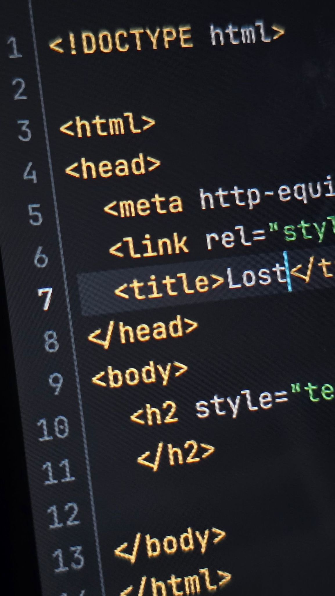
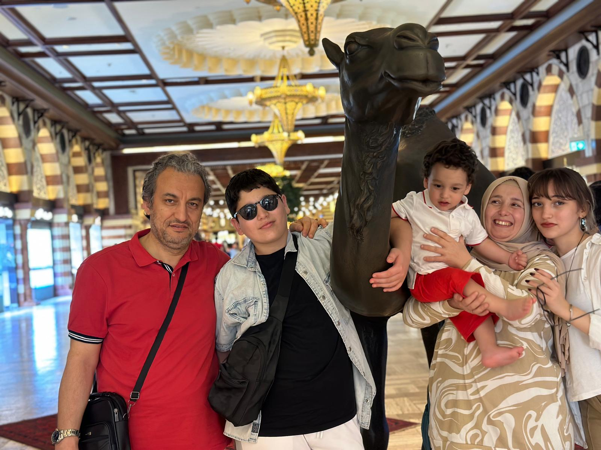
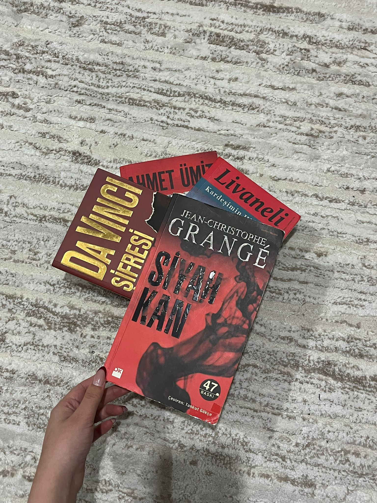
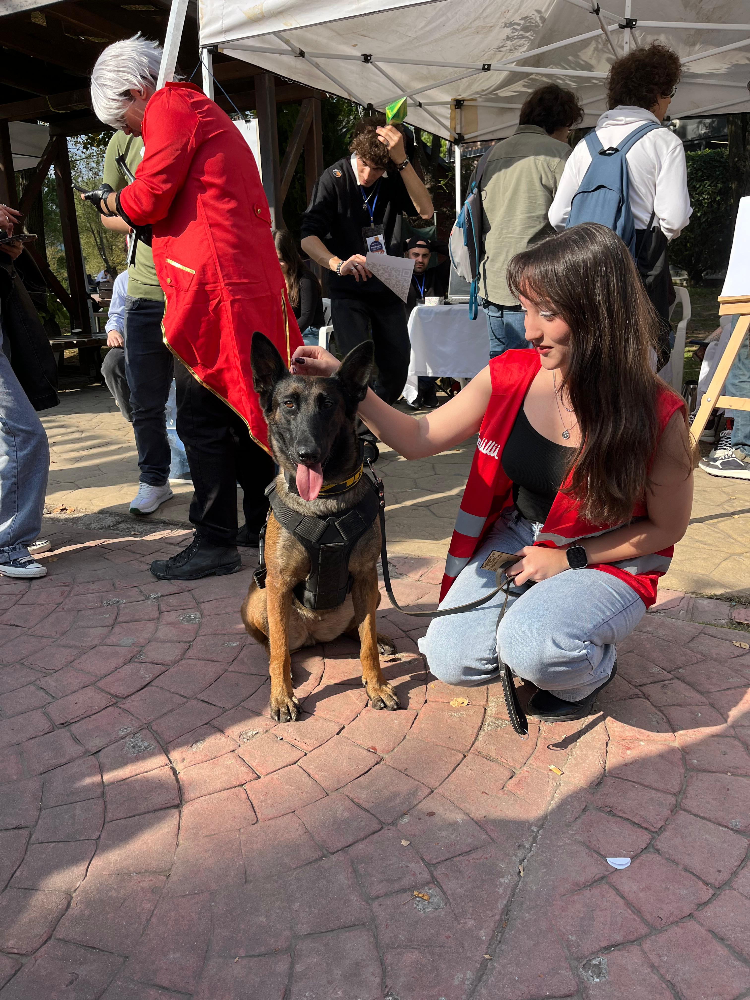
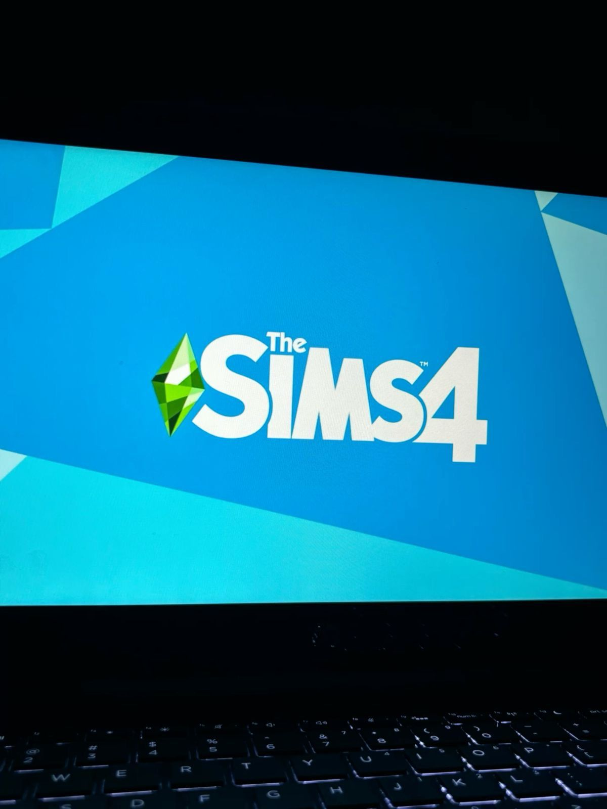

Hakkımda
Merhaba. Adım Merve Sena Ertuğ. 14 Mart 2007 Sakarya doğumluyum. Bilgisayar mühendisliği bölümünü seçerken çokça araştırma yaptım çünkü meslek hayatından tam olarak ne istediğimden emin değildim. Bölümdeki 1. yılımı tamamlarken iyi ki bu bölümü seçmişim diyorum; öğrendikçe sevdim, sevdikçe öğrendim. Akademik hayatımın yanı sıra boş vakitlerimi dolu dolu geçirmeye çalışıyorum.
Boş vaktimde neler yapıyorum?
Kodlama öğreniyorum. Maalesef pek bir temelim yoktu, temel oluşturarak üzerine eklemeye çalışıyorum. Kendimce programlar yazmaya çalışıyorum.

Ailemle vakit geçiriyorum.

Kitap okuyorum. Polisiye en sevdiğim kitap türü.

Gezerek yeni kültürleri ve orasının tarihini öğrenmeye çalışıyorum. Gittiğim yerlerin fotoğraflarını çekiyorum.
Elimden geldiğince sosyal etkinliklerde yer almaya çalışıyorum.

Oyun oynuyorum. Dizayn ve simülasyon oyunlarını seviyorum. Artık sevmekten de öte arka planda nasıl kodlar ile yazıldıklarını merak ediyorum. Belki ben de bir gün bu tarzda bir oyun geliştirebilirim.
